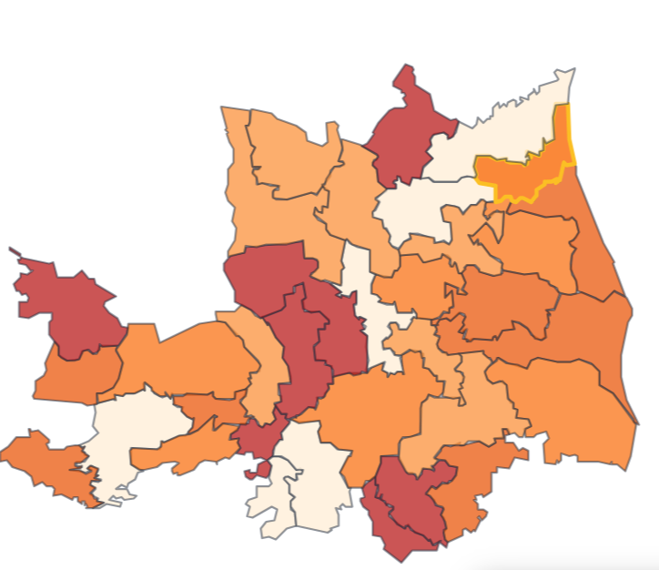
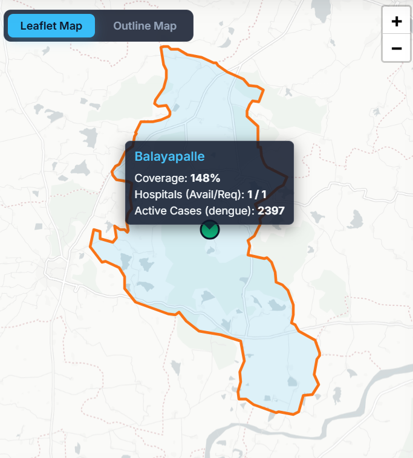
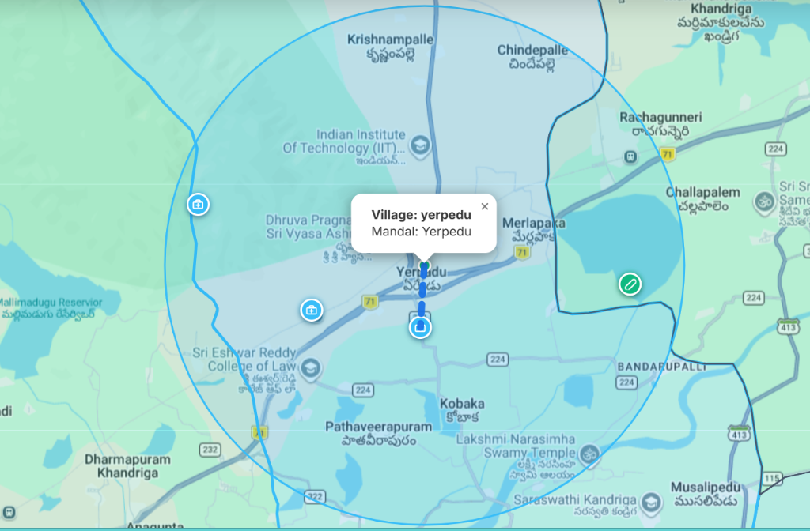
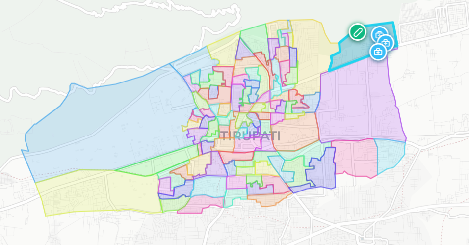
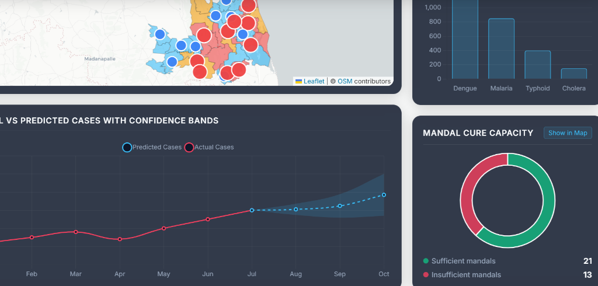

Welcome to Tirupati Medical GIS
A comprehensive geospatial dashboard designed to monitor, analyze, and visualize healthcare resources and disease across Tirupati district.
Explore our detailed district-level analytics, view individual mandal breakdowns, and discover the availability of medical facilities for better public health planning.





TIRUPATI MEDICAL GIS